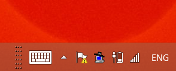
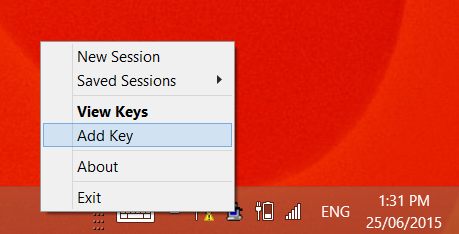
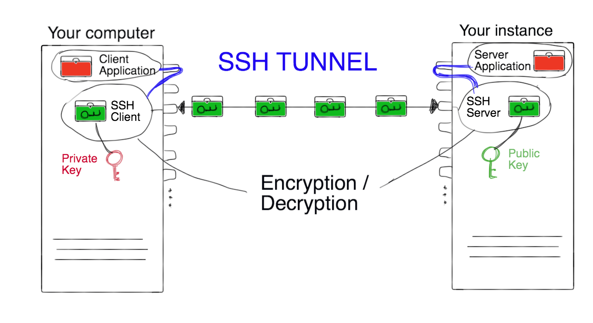

Module 7
Launching and Connecting
Sections of this module:
IntroductionCreate a ssh key
Launching an instance
Connect to the instance
Configuration and control
Connect to a remote desktop
Graphical Interfaces on the ssh terminal
Install a web server
Managing storage
Summary
Appendix
View all sections on one page (Printer friendly)
Appendix
A number of topics are covered in the appendices. Scroll through the document to find what you may be looking for.
Create a new security group
On the Dashboard:
-
Go to Access and Security
-
Create Security Group
-
Name it something meaningful, and add any description
-
Click Create Security Group. You will see the new group in the list now.
-
Click Manage rules at the right of your group.
-
At the top right of the page, click Add rule
-
You probably want an Incoming TCP rule.
-
If you want to allow access from any computer, type 0.0.0.0/0 in the CIDR

The part before the slash ”/” is the address for localhost and the part after the slash specifies the subnet mask — you don’t need to worry about the meaning in this tutorial, but look it up online, e.g. google, if you want to restrict access to computers from only a certain range of IP addresses, e.g. only computers from within a university.
After you have created the security group, you can add it to the instance. Go to Compute > Instances and in the right-hand drop down menu for your instance, select Edit Security Groups.
Troubleshooting Linux and Mac: Problems connecting
Check which ports are open on your system:
-
Using nmap to check with ports are open:
On Linux:
sudo apt-get install nmap
On Mac OS X:
brew install nmap
The nmap command will show you which ports of the computer are open, i.e., there is a server or client using it.
sudo nmap -sT -O localhost
For example, if you are tyring to connect to ssh, type the above commands into your local terminal, and you should see the line:
22/tcp open ssh
Or, if you are trying to get VNC going, you can type the commands in your instances ssh terminal, and the output should show something like:
5900/tcp open vnc -
Using netstat (Linux):
sudo netstat -tulpn -
Using nc (netcat) to check whether there is something listening on the other side:
nc -v -w 5 NNN.NNN.NNN.NNN -z <port>
(-v verbose, -w timeout, -z just scan for daemons)
If you get the error:
@@@@@@@@@@@@@@@@@@@@@@@@@@@@@@@@@@@@@@@@@@@ @ WARNING: UNPROTECTED PRIVATE KEY FILE! @ @@@@@@@@@@@@@@@@@@@@@@@@@@@@@@@@@@@@@@@@@@@ Permissions 0664 for '<yourkey>' are too open. It is required that your private key files are NOT accessible by others. This private key will be ignored. bad permissions: ignore key: <yourkey> Permission denied (publickey).
Then you have changed the access rights to the key while copying it around. Fix this with:
chmod go-rw <yourkey>
Converting ssh keys from Linux for PuTTY
If you have generated your ssh key on a Linux system and now want to use it in Putty, you have to convert the keys first. If you have generated your key file with putty, you don’t need to do this. To convert the key, follow these steps:
-
Start PuTTYGen.
-
Click on the menu Conversions and select Import key.
-
Select your private key and enter the passphrase.
-
Click on the button Save private key and save your key file.
You may also want to simply create a separate set of keys for PuTTY (see this section). In this case, you have to add the new key as an authorized key on the instance. This is explained here in this Appendix.
Windows: Using Pageant to handle your ssh key
You may use a SSH authentication agent, which holds your private keys in memory, already decoded, so that you can use them without needing to type a passphrase.
PuTTY also offers a tool called Pageant, which is the PuTTY SSH authentication agent. Download it on the PuTTY website. If you have not generated your ssh key with PuTTY in the first place, you will also need to convert it to the PuTTY format. You can do this using the tool PuTTYgen (you can find instructions on how to do this in this Appendix).
To load your ssh key with Pageant:
Step 1.
 Start up Pageant (by clicking on pageant.exe which you downloaded). In your system tray, you’ll see the Pageant icon appear: A computer symbol with a hat on.
Step 2.
 Right-click the icon and select Add Key and select your private key (PPK) file. Enter your pass phrase. Now, your key is loaded in the Background and you can use FileZilla via the secure FTP protocol SFTP in the next step.

Don’t forget to close Pageant when you’re done! Otherwise any user with access to your computer can easily gain access with your ssh key without having to type the ssh key passphrase. To close pageant, go to the system tray icon, right click and Exit pageant.
See also the pageant tutorial on digitalocean.
Creating a new user account
If you want to create a new user account on your VM, type in the following command in your ssh terminal:
sudo adduser <username>
replacing <username> with the username you would like to create. It will prompt you to create a password for this user, and type in their name and contact details.
If you would like to just create the user without specifying password and details, use
sudo useradd <username>
instead. You then can set the user password with:
sudo passwd <username>
It is recommended you use a random password initially, and then give it to the user, with the strong recommendation of changing it (a user cannot set their own initial password themselves, hence this initial step is required). Users can change their own password with:
passwd
You have now created a user with minimal privileges. For example, the user cannot perform administration tasks which require the sudo command prefix. If you would like to add privileges for this user, you can add it to certain privileges groups, e.g. the sudo group:
sudo adduser <username> sudo
The user can then use the sudo command to perform administrative tasks. They will have to type in their own password to execute sudo commands (this is a security measure in case they left their keyboard unattended).
To check the right groups the user is assigned to, type
id <username>
Each user should have their own ssh keys. Ask them to create it, using their passphrase of choice, and then send you their public key. Add their public key to your VM by following instructions here in this appendix.
Adding a new ssh key
If you want to use a new key to connect to the instance, you have to add it to the file authorized_keys on the user’s account. If you are adding another key for the ubuntu user, the <username> in the command below is ubuntu, otherwise it is the user name you want to add a key for.
First, create the .ssh directory for the user, if it does not exist yet (if it exists, this command will return an error):
sudo mkdir /home/<username>/.ssh
Then, edit the file authorized_keys
sudo nano /home/<username>/.ssh/authorized_keys
Paste the contents of your public key as one line into this file.
Tip: Copy the content of the public key by opening it with a text editor, marking all text and copying with CTRL+C. Then, go to your PuTTY Window which has the editor open for authorized_keys. Pasting the content will not work with CTRL+V on PuTTY, but instead, clicking the right or middle mouse button should paste the content.
Similarly, if you want to remove a key, you have to delete the line for that key from the authorized_key file on your instance.
Make sure that the directories and files have the correct ownership and access:
sudo chown -R <username> /home/<username>/.ssh
sudo chgrp -R <username> /home/<username>/.ssh
sudo chmod 700 /home/<username>/.ssh
sudo chmod 500 /home/<username>/.ssh/authorized_keys
SSH Tunnelling explained
SSH Tunnelling is best explained with an example. Imagine you’re on a private network with very conservative firewall rules which don’t allow connections to a specific server. For example, blockedsite.com is not accessible from your network. You can of course ask your system administrator to free up this site for you, but you may have to wait for the approval. To get around this firewall rule we can redirect our connection via a port that does not block this website: We can create a tunnel through a server which is not on our network and which can access blockedsite.com. We call this server the gateway.

Let’s say blockedsite.com uses the http protocol (as most websites do) through Port 80. Instead of connecting our port 80 to the blocksite.com’s port 80 (which would not work), we will redirect all traffic from our port 80 through the secure ssh port 22. This one will not be blocked by the firewall, and nobody will be able to decipher the traffic going through it (unless they get access to your private key and passphrase of course). On the gateway, our connection will come in at Port 22, and the ssh server will then redirect the traffic to port 80 on blockedsite.com. We call this technique local port forwarding. Of course, the connection between the gateway and the server of blockedsite.com is not encrypted; only the tunnel between our computer and the gateway is.
The technique of local port forwarding through an ssh tunnel can also be used to create a secure connection all the way to the destination server, so that there is no point at which the connection is not encrypted. In this case, the gateway is also the destination server itself.
As an example, we are going to discuss the setup for ssh tunneling on port 5900 on our instance (the default VNC port), using the gateway localhost. The example is for Mac and Linux. Observe that the gateway is localhost, because when we specify the destination server, it is also the gateway in this case (this can be a bit confusing, because you would guess we specify the gateway first… but actually we first specify the destination server, and then the gateway through which we want to create the tunnel. From the gateway’s point of view, the destination server is localhost). The tunnelled service will be available on our localhost, port 6000 (we use different numbers so you can distinguish it in the text below). We could do this for any other port numbers.
-
On your machine, create a tunnel from your machine (port 5900) to the other machine (port 5900)
ssh -i <your-key-name> -L 6000:localhost:5900 -N -f -l ubuntu NNN.NNN.NNN.NNN
replacing NNN.NNN.NNN.NNN with the IP address of the instance. -
On the instance: Install and start any service that will listen on port 5900 (e.g. the VNC Server).
-
A quick test should show you that you cannot actually directly connect to port 5900 on the instance:
telnet 144.6.227.50 5900
This will try connect you to the remote port (without any useful application, but it’s a good way to test whether the port is open). The shell should just say “trying to connect…” but nothing happens: Because we have not allowed access to port 5900 from outside… only via the SSH tunnel! And the ssh tunnel is accessible via our localhost. End the connect trying with Ctrl+C. Instead, try:
telnet localhost 6000
or
nc -v -w 5 localhost -z 6000
And you should see a command prompt (no error). So now you are talking to the port and can specify commands specific to the server, but we don’t really want to do this now.
To quit the telnet command prompt: Hit Ctrl+] (control and the right-bracket). That will return you to a telnet command prompt. From there you can enter the quit command (typing q is sufficient) and you will be returned to your usual Windows command prompt.
If this still does not work, make sure there is a server listening on port 5900. Check this with:
sudo netstat -tulpn
There should be your service listed as “Listening” on the port you have meant it to provide its service. If your service is not listening on that port, it won’t be possible to connect to it either.
The ssh -L options are explained as follows.
Syntax:
-L <local-port-to-listen>:<remote-host>:<remote-port> <gateway>
-
-N : Do not execute a remote command i.e. just forward ports.
-
-f: Requests ssh to go to background just before command execution. Once password supplied it will go to background and you can use prompt for type commands on local system.
-
-l ubuntu: ubuntu is the user to log in as on the remote machine (sshserver.mydomain.com). Note: The -f -N options in the above command cause the tunnel to run in the background: once you have typed in the password, the command line prompt returns to your local shell. In this case, if you ever want to close your ssh connection, you have to kill the connection:
ps aux | grep ssh
Then, find your ssh tunneling command and note the number on the left, after your user name. To kill (close) the ssh tunnel, type:
kill <the-ssh-tunnel-process-number>
If you don’t use the -N -f options, you will be logged into an ssh terminal to your instance, and can use it as usual to type commands on your instance. If you type logout or close the terminal, the ssh tunnel will close as well.
This is the end of Module 7. Continue with Module 8

 This work is licensed under a
This work is licensed under a